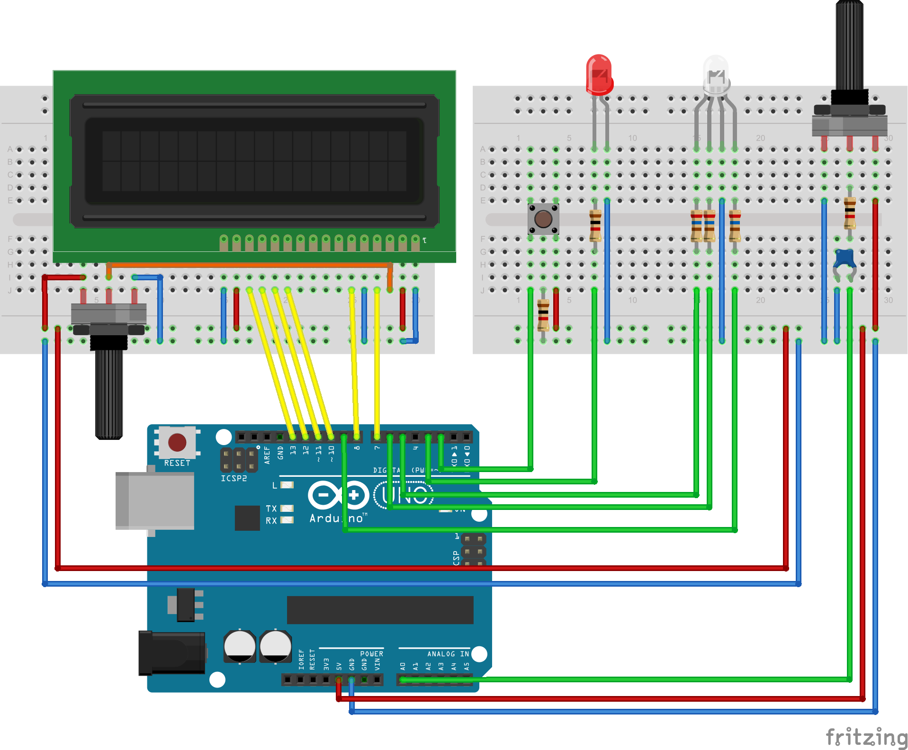

Auteur Phil Bri
DuinoMultiRemote
Est un plugin de démonstration permettant à S.A.R.A.H d'interagir avec une carte Arduino afin d'en commander les "objets" ou composants pouvant y êtres sont connectés.
Toutefois, dans la plupart des montages, les retours d'états de l'arduino ne sont pas en temps-réel et il faut donc faire régulièrement des requêtes manuelles en les planifiant éventuellemnt avec des CRON's ou des Timers.
Le but de ce module étant de valider:
- La communication temps-réel avec S.A.R.A.H
- Le rafraîchissement de portlet.
En agissant interactivement depuis:
- Le portlet.
- Envoi des commandes depuis l'écran du client S.A.R.A.H
- Retour d'action.
- Les objets/composants reliés à l'Arduino:
- Bouton poussoir.
- Potentiomètre.
- Des requêtes
HTTP - Sur le port 8080 en
REST - Sur le port 8888 en utilisant la commande
emulate. - La commande vocale intégrée à S.A.R.A.H
Afin de commander:
- Une LED
- Fonction ON/OFF
- Variation (dimming).
- Une LED RGB.
- Fonction ON/OFF
- Sélection des couleurs via
colopickerintégré au portlet. - Un display LCD
- Etat général (ON/OFF).
- Valeur du dimming de la LED.
- Valeurs des composantes RGB.
- Etat des LED's
Pour son fonctionnement global, DuinoMultiRemote à besoin de charger des bibliothèques (librairies) NodeJs. Elles sont jointes à cette distribution et disponibles dans le répertoire /node_modules du plugin.
Pour la gestion interactive des couleurs assignées à la LED RGB le plugin utilise aussi :
-
spectrum
- Un
colorpickerutilisé dans le portlet.
- Un
Chronologie :
-
1 - Les requètes sont envoyées vers l'Arduino via la librairie
node-serialport depuis le port COM de l'ordinateur.
2 - Le
sketch de l'Arduino retourne via node-serialport, le nouvel état de ses composants au plugin et met à jour l'afficheur LCD.
3 - La librairie
socket.io permet de mettre immédiatement à jour le portlet afin de refleter le résultat de la requète.
Schéma fonctionnel (principe):
Arduino SerialPort Plugin Socket.IO Portlet
L'ensemble des interactions entre les fonctions de MultiDuinoRemote, les composants de l'Arduino et S.A.R.A.H est résumé dans le tableau ci-aprés :
| Fonctions | Composant concerné | Commandes S.A.R.A.H | Ret. Etat | ||
|---|---|---|---|---|---|
| Arduino | Relié à | Vocale | Portlet | ||
| On/Off Général | LED & RGB | Btn Poussoir | Oui | Oui | Oui |
| On/Off | LED | S.A.R.A.H | Oui | Oui | Oui |
| RGB | Oui | Oui | Oui | ||
| Dimmable | LED | S.A.R.A.H | Oui | Oui | Oui |
| Potentiomètre N°1 | Non | Non | Oui | ||
| Nb. Cycles | Btn Poussoir | S.A.R.A.H | Non | Non | Oui |
| Affichage | LCD | S.A.R.A.H | Non | Non | Oui |
| Potentiomètre N°2 | Non | Non | Non | ||
DuinoMultiRemote maintient en permanence, aprés chaque action, un fichier récapitulatif du dernier état des composants gérés par l'Arduino.
Le but étant de remonter les données vers un programme tiers (Box, Appli, Stockage) pour pouvoir les y intégrer. Comme, par exemple, la réalisation d'un périphérique "virtuel" sur une box domotique qui pourra déclancher des actions en fonction des états retournés.
Le contenu de ce fichier est au format JSON et est disponible en "local" dans le répertoire du plugin sous le nom values.ejs.
La requête http permettant d'y accéder est la suivante :
http://{server_ip}:8080/plugin/DuinoMultiRemote/values
Cette requête peut être directement assignée: var my_Var = http://{server_ip}:8080/plugin/DuinoMultiRemote/values;
Pour pouvoir fonctionner, le module a besoin de connaître le port COM{x} de l'Arduino afin de lui envoyer les requêtes demandées via la liaison USB. (Il est à noter que la gestion via des shields "ethernet" est aussi possible...).
Vous devez donc, via le portlet du module, paramétrer le port COM :
- Port :
{COM{x}}
Ou {x} représente le numéro du port. (ie: COM3)
Pour pouvoir fonctionner correctement avec DuinoMultiRemote, l'Arduino à besoin d'un programme adapté ou sketch lui permettant de:
- Communiquer avec le plugin.
- Interagir avec les composants
Ce programme est disponible dans le sous-répertoire /arduino/duinomultiremote du plugin sous le nom DuinoMultiRemote.ino
Le sketch de l'Arduino gère les composants qui peuvent lui êtres connectés via ses Pins. Toutefois, vous pouvez vous contenter de ne cabler que ceux qui vous intérressent ou qui sont en votre possession...
D'autre part, les composants "visibles" sont couplés avec certains composants "actifs" (cf: Tableau), ce qui permet de les actionner directement depuis la breadboard de l'Arduino.
Tableau récapitulatif des connexions:
| Composant | Fonction | Arduino | Association |
|---|---|---|---|
| LED | PWM~ | Pin N°3 | Potentiomètre N°1 - Poussoir |
| RGB LED | Red Color | Pin N°5 | Poussoir |
| Green Color | Pin N°6 | ||
| Blue Color | Pin N°9 | ||
| Poussoir | Contact sec | Pin N°2 | LED - RGB |
| Potentiomètre N°1 | Analogique | Pin N°A0 | LED |
| LCD Panel | LCD 'RS' | Pin N°7 | Potentiomètre N°2 |
| LCD 'E' | Pin N°8 | ||
| LCD 'DB4' | Pin N°10 | ||
| LCD 'DB5' | Pin N°11 | ||
| LCD 'DB6' | Pin N°12 | ||
| LCD 'DB7' | Pin N°13 | ||
| Potentiomètre N°2 | LCD Contrast | LCD Panel |
Concernant le câblage de la breadboard, vous pouvez vous inspirer du schéma ci-dessous.

Le fichier Fritzing correspondant à ce montage est disponible dans le sous-répertoire /arduino du plugin sous le nom DuinoMultiRemote.fzz, ce qui vous permettra de pouvoir le modifier à votre convenance.
L'ensemble de la grammaire utilisée par le module est stockée dans le répertoire du plugin sous le nom : DuinoRemote.xml
Ce fichier est aisément éditable par vos soins pour vous permettre de modifier, ajouter ou retirer une commande vocale.
Les commandes sont divisées en 2 catégories :
- Commandes d'action.
- Commandes de retour d'état.
Les commandes d'action permettent de modifier l'état d'un périphérique et les commandes de retour d'état permettent d'en connaître le statut.
Il est à noter que si une commande ne peut aboutir, le plugin vous en avertira.
SARAH allume la LED
- Envoi
"L{ledValue},1\n"sur le port COM - Retour vocal:
La Led est allumée
SARAH éteinds la LED
- Envoi
"L{ledValue},0\n"sur le port COM - Retour vocal:
La Led est éteinte
SARAH éteinds la RGB
- Envoi
"R{red-val},{green-val},{blue-val},0\n"sur le port COM - Retour vocal:
La RGB est éteinte
SARAH allume la RGB
- Envoi
"R{red-val},{green-val},{blue-val},1\n"sur le port COM - Retour vocal:
La RGB est allumée
SARAH quel est l'état de la LED
- Envoi
"?\n"sur le port COM - Retour vocal:
La Led est {éteinte,allumée}
SARAH
puis :
Etats:
{Donne moi, Quel est, Dis moi} l'état de la led ?
{Donne moi, Quel est, Dis moi} l'état de la RGB ?
{Donne moi, Quel est, Dis moi} l'état du potentiomètre ?
{Donne moi, Quel est, Dis moi} l'état du dispositif ?
Valeurs:
{Donne moi, Quel est, Dis moi} la valeur de la led ?
{Donne moi, Quel est, Dis moi} la valeur du rouge ?
{Donne moi, Quel est, Dis moi} la valeur du vert ?
{Donne moi, Quel est, Dis moi} la valeur du bleu ?
{Donne moi, Quel est, Dis moi} la valeur du potentiomètre ?
Allume:
{Allume, Mets} la LED.
{Allume, Mets} la RGB.
{Allume, Mets} le dispositif.
{Allume, Mets} le potentiomètre
Eteint:
{Eteint, Coupe} la LED.
{Eteint, Coupe} la RGB.
{Eteint, Coupe} le dispositif.
{Eteint, Coupe} le potentiomètre.
Augmente:
{Monte, Augmente} la LED.
{Monte, Augmente} le rouge.
{Monte, Augmente} le vert.
{Monte, Augmente} le bleu.
Diminue:
{Baisse, Diminue, Descend} la LED.
{Baisse, Diminue, Descend} le rouge.
{Baisse, Diminue, Descend} le vert.
{Baisse, Diminue, Descend} le bleu.
Il est possible de commander les LED's via les 2 composants "actifs" cablés sur la breadboard.
1 - Le potentiomètre :
- Est relié via le
sketchArduino à la LED. - Une rotation permet de faire varier l'intensité lumineuse de la LED.
2 - Le bouton poussoir :
- Est relié via le
sketchArduino à la LED et à la RGB. - Un appui bref permet d'éteindre/ allumer la LED et la RGB.
La réalisation d'une de ces actions entraînera les mises à jour suivantes dans le portlet:
- Valeur analogique du potentiomètre.
- Etat et valeur d'intensité de la LED.
- Affichage du nombre de cycles d'allumage/extinction.
Le portlet étant relié à l'Arduino en mode bidirectionnel (via le plugin), il est tout à fait possible d'utiliser votre écran pour envoyer vos commandes et pour en visualiser les retours.
Vous pouvez donc clicker sur :
- Les boutons actifs : Pour en changer l'état OFF
- Les sliders :
Pour en faire varier la valeur.
Les requètes correspondantes sont alors envoyées sans délai à l'Arduino et le portlet immédiatement mis à jour...
Les erreurs générées par le programme peuvent notament, avoir les origines suivantes:
- L'Arduino n'est pas branché avant le lancement du serveur.
- Erreur de paramètrage du port COM.
- Erreur lors de la requète.
-
[X] RGB LED.
[X] LED.
[X] Switch.
[X] Potentiomètres (x2).
[X] LCD Panel
-
[X] GENERAL ON/OFF.
[X] LED ON/OFF.
[X] LED dimmer.
[X] RGB color changing.
[X] RGB ON/OFF